Role
UX Research + Design
Date
Nov, 2020 (2 weeks)
Team member
Michael Lyken, Euphie Zhao
Overview
This project focuses on evaluating the travel site - Hotwire.com by performing user testing. The goal is to identify usability problems users encounter in the process of booking flights, hotels and rental cars, and provide potential redesigns that help solve the problems and create a more user-friendly interface.
https://www.hotwire.com/
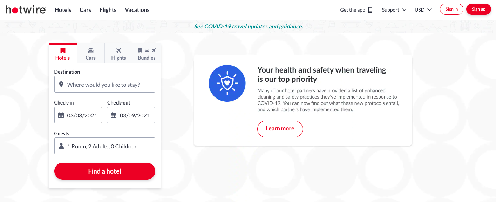User Testing Plan
Due to the time constraint, we were able to interview four users to help define the pain points of navigating through Hotwire.com. The four users we picked are from diverse backgrounds, and we were able to observe people at different ages with different needs and see some differences in how they perform the tasks. The user testing starts with a questionnaire asking about some background information as well as how familiar they are with Hotwire.com and their experience in using a travel site. Then, in the testing session, we asked users to perform 2-3 tasks (depending on the time).
Tasks
A: You and your family are planning a trip to Disney World in Orlando, FL during Thanksgiving. You plan to leave on Nov 24th from San Diego and come back on Nov 28th. Book the flight tickets and hotel for this trip.
B: You booked a flight ticket from Los Angeles to Boston on Nov 20th on this website, but you just realized that you probably entered the wrong email address and did not receive the confirmation email nor the confirmation number, how would you find your trip?
C: Your son lives in San Diego county, and you are visiting him during the winter break. He doesn’t have a car, so you want to rent a car during this visit in San Diego county.
Due to the Covid situation, we were only able to meet with users online using zoom. In each testing, there was one member leading the session and two members observing and taking notes. The users have also given consent for us to record the meetings and we were able to review it after the testing session.
Analysis
Given the limited users and the diverse background of each user, we decided to analyze the result individually before merging to define the most important component that needs redesigning. For each user, we defined the top three usability problems by observing their performance on the tasks. For each problem, we also listed the usability heuristic it violates.
User 1
-
[User control and freedom] Cannot change the number of rooms unless start the whole process again.
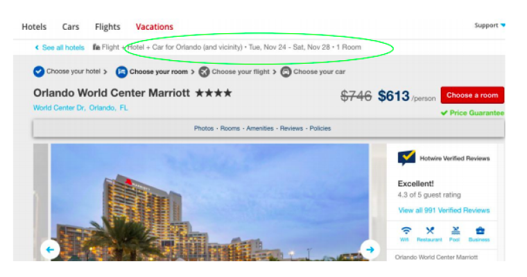
[Error prevention] Doesn’t ask to double check the email address.
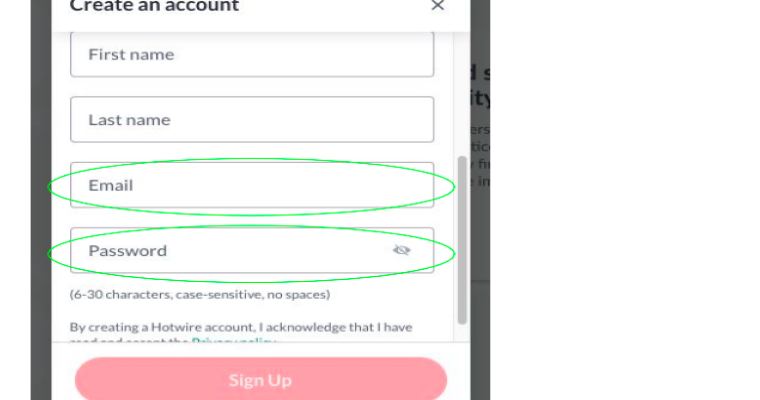
-
[Visibility of system status] There is no way for users to return homepage from the Help Center.
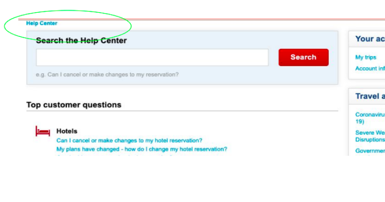
User 2
-
[Flexibility and efficiency of use] Doesn’t support auto-fill for specific locations, i.e. abbreviation of a certain location
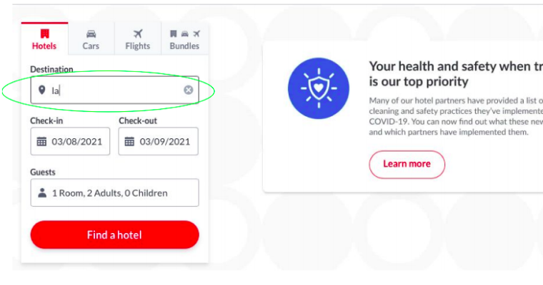
[Aesthetic and minimalist design] unnecessary information on hotel page (hot rate hotels)
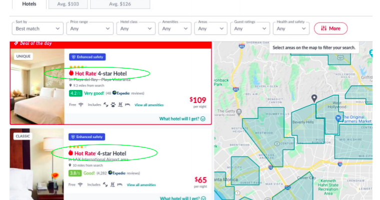
-
[Consistency and standards] Does not provide enough information about the hotel

User 3
-
[Flexibility and efficiency of use] Cannot change the number of travelers unless start the whole process again.
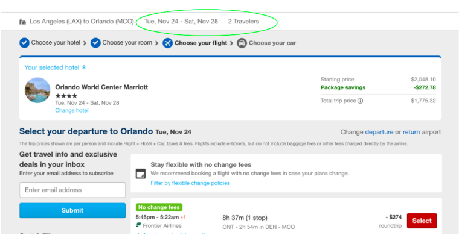
[Match between system and the real world] As a foreigner, not familiar with the name of rental agencies or the name of the car brands.
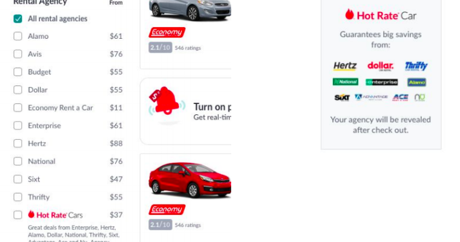
-
[Recognition rather than recall] No breakdowns of taxes and fees while checking out the rental car.
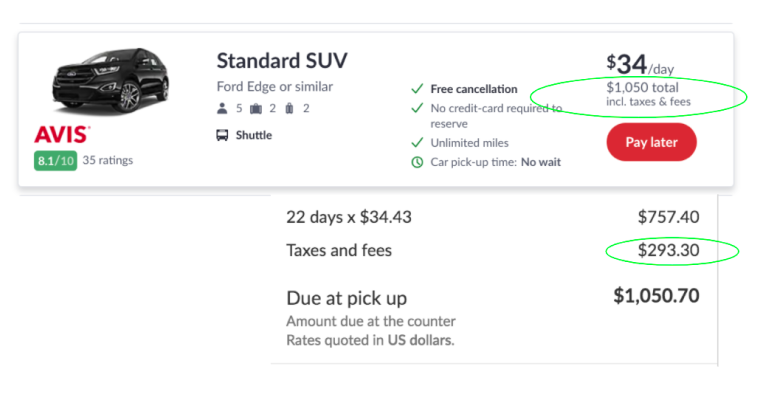
User 4
-
[User control and freedom]Do not allow the user to change return flight only.
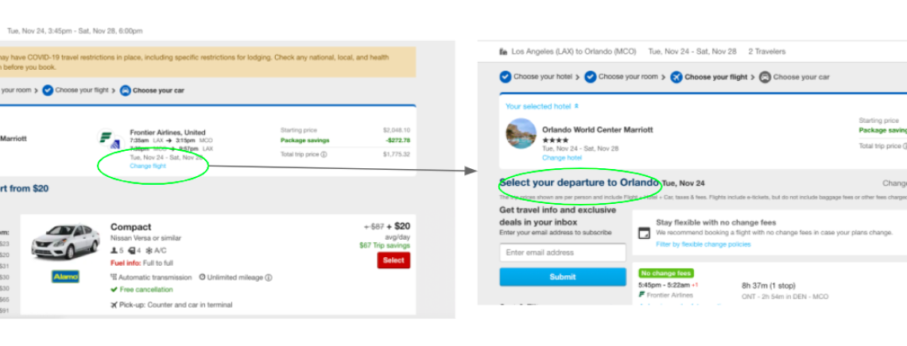
[Consistency and standards]Hotel names are not provided when the user is checking hot rate hotels.
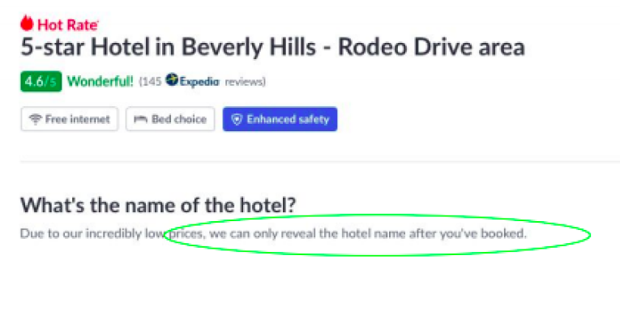
-
[Flexibility and efficiency of use]If users want to change the room selection, he would have to select the hotel again.
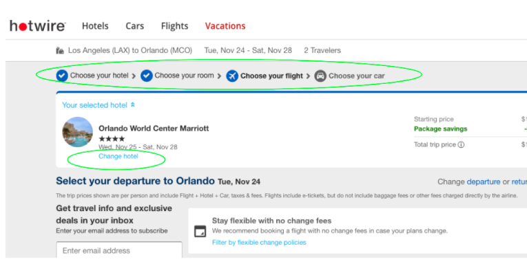
Redesign
From the testing and analysis, we found that users have encountered many problems with booking bundles. The breadcrumbs are not clickable, and it does not allow users to go back and forth in the booking process. When the users made mistakes, they could not change them unless they started the process again. Redesigning the navigation makes it easier for users to access their previous selections and make changes.
-
Redesign 1
We changed the breadcrumbs into clickable buttons, not only guiding but showing the system status. So the users can go back and forth and make changes if needed. We also added the “room details” under the breadcrumbs, which the original site doesn’t include, keeping track of what users have selected for enhancing the visibility of the previous choices. We added a section of “location and dates” in this redesign for users to change the dates flexibly. Also, we offer a checkbox for users to choose specific dates to rent cars just in case.
Low Fidelity Prototype
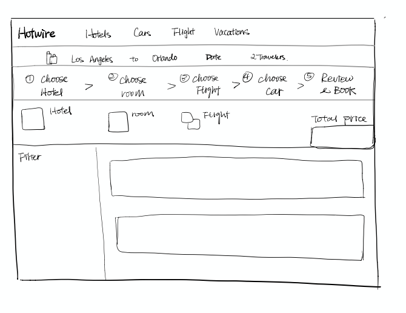High Fidelity Prototype
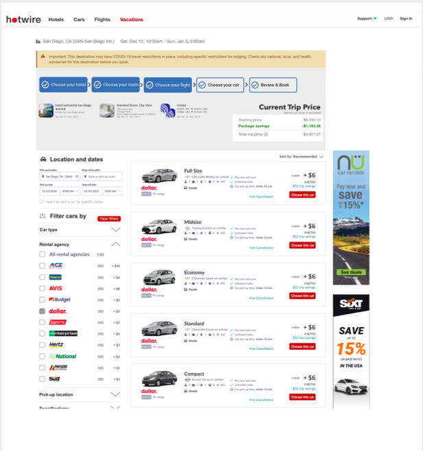 -
Redesign 2
We added an itinerary section on the left with links that allow users to go back to their hotel, room, and flights if changes need to be made. We provided two separate links that allow users to change either the departure or return flight only, reducing the workload if users want to change only one flight.
Low Fidelity Prototype
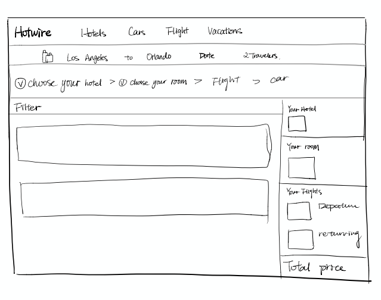High Fidelity Prototype
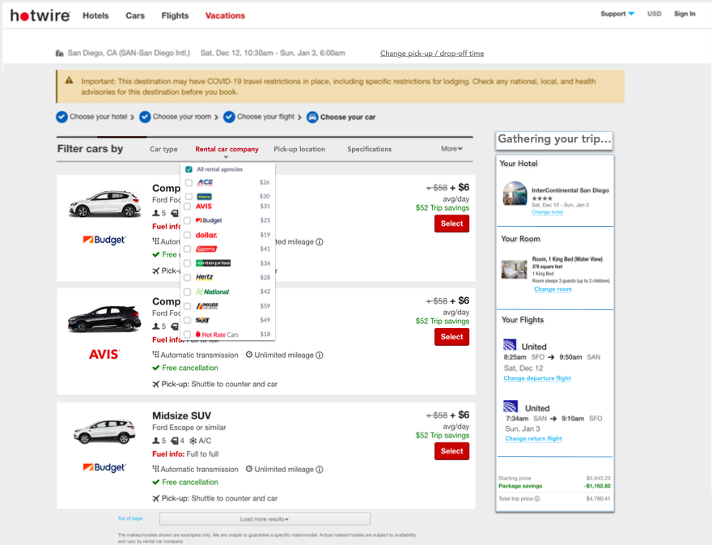
With the clickable breadcrumb, users could navigate to any stage of the booking process if they would like to change anything. Their selections are available below the breadcrumb and the total prices are also available. The redesign effectively reduces the workflow.
With the itinerary section, users can see their previous selections and links are available if they want to change anything. Total prices are available in the bottom. This redesign supports recognition rather than recall and allow users to navigate through faster.
Reflection
The project is relatively fast-paced, with everything done in two weeks. We felt the need of more users and hoped to have more time to polish the final hi-fi redesigns. However, we were able to identify an important usability problem by only doing testing with four users. An important lesson learned is that problems can be identified without too many tests. However, the users have to be diverse. When testings are done with a particular group of people, the problem identified may be limited and will not generalize to other users. The quality of testing weighs more than quantity.